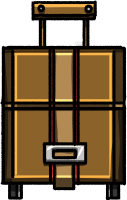
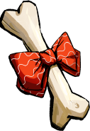

EXPLORE
Story
Since ancient times, it has been said that only a Shiba Inu with bones is rightful to be leader of the village. But there was no Shiba Inu that actually spot the bone. As such, the story seemed to become a legend and slowly be forgotten from everyone as a rumor, but it was said that bones were actually found deep in the ground.
And disappeared in a blink of an eye. From Shiba Inus who quickly returned to the village as soon as rumors spread, to Shiba Inus who are already working in their places, 5,000 Shiba Inus are traveling to find bones. Who's going to be the boss? (Random number of crowns marked)
MISSON 1
In Shiba Inu Village, there has long been ‘Bone’, the guardian of peace. Because no one had to protect the village, Shiba Inus were able to leave the village comfortably to be independent, and they could have different jobs. During peaceful times, unfortunate news broke out. The Bone was stolen! But as busy Shiba Inus can't make time to find it, they needed help of their holders. Gather 5,000 Shiba Inus and take them to the village to keep peace! (If there is an ongoing additional event like LAC, only holders with baby Shiba Inu and Bone NFT will receive random job creation benefits.)
MISSON 2
In Shiba Inu Village, there has long been ‘Bone’, the guardian of peace. Because no
one had to protect the village, Shiba Inus were able to leave the village
comfortably to be independent, and they could have a variety of occupations. During
peaceful times, unfortunate news broke out. The Bone was stolen! There was no big
clue in the empty village, so the investigation fell into a mystery, and the village
was left in chaos. At that time, there followed a testimony from the first witness
that there was leftover food crumb at the scene. The food crumb, which had different
shapes for different occupations, was the only clue to find the criminal. Will the
holders be able to find the culprit who took away the guardian of peace in Shiba Inu
Village?
(Insert pictures of different shapes of dog food crumb depending on the job they
have (put simple shapes of circles, squares, triangles, etc.) at the bottom right of
the Shiba Inu image)
+ Can be upgraded if you purchase feed by job (NFT) (EX. Police Shiba Inu -> Senior
police officer with Badge / Fireman Shiba Inu -> Fireman with Fire Extinguisher) If
you purchase incompatible(unmatching) food crumb you'll be downgraded. (EX. Your
uniform or accessory will be worn out or your job license will be taken away (ex.
Crazy Shiba Inu in an old doctor's gown and holding an injection) Certification
strippage is expressed by the paper icon ripped on top)